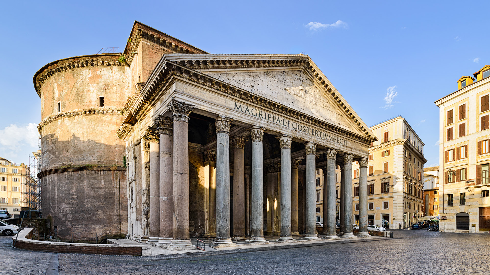

| PANTHEON | |
|---|---|
| İNŞAA YILI | 118-125 yılları arasında |
| KURUCU | İmparator Hadrian |
| ÜNVANI | Tüm Tanrıların Tapınağı |
| İNŞA EDİLME NEDENİ | M.S. 80 yılında yanan eskisinin yerine geçmesi |
| İÇERİK | Marcus Agrippa’ya ithaf edilmiş bir yazı ve iki heykel |
| KUBBE BOYUTU | 43 metre çap ve yükseklik |
| EKSTRA BİLGİ | 609 yılında Bakire Meryem’e adanarak kiliseye çevrilmiştir |
| ADRES | Piazza della Rotonda, 00186 Roma |